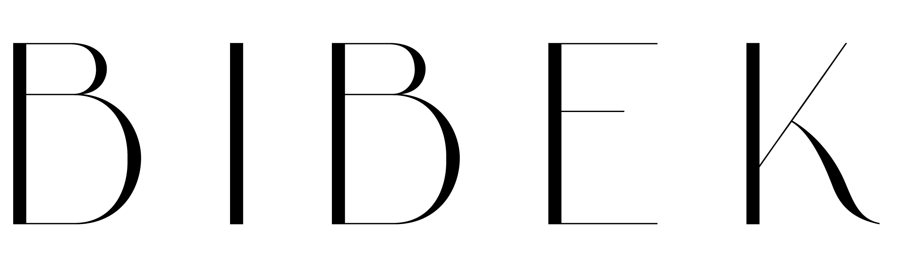
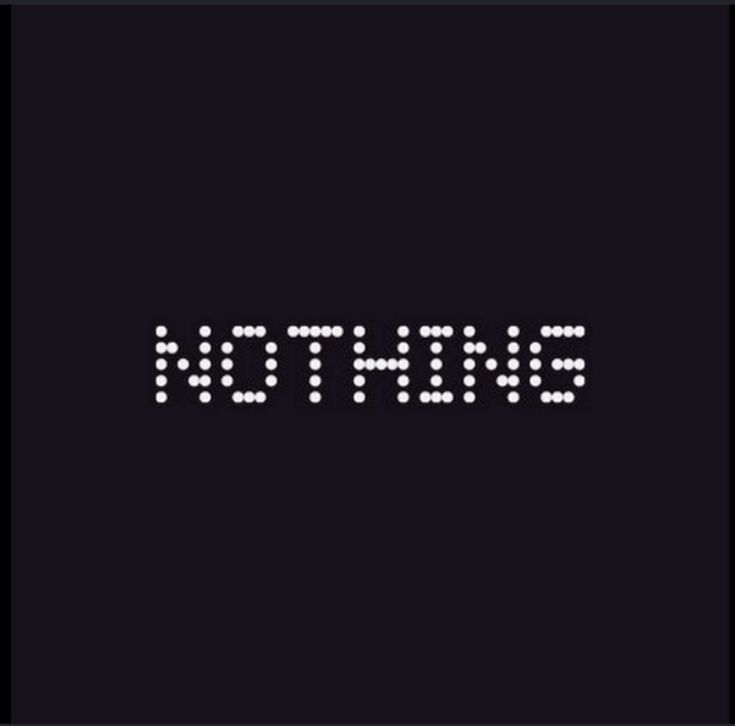

Creating What AI Cannot
BIBEK GARBUJA — Graphic Design Student based in Tokyo


BIBEK GARBUJA — Graphic Design Student based in Tokyo

Personal Logo Design Project
1. Simple and Instantly Recognizable
2. Pixelated, Developer Aesthetic — Less is More

2. Artistic, symbolic, and Unique
3. Conveys the artist’s name, Bibek Garbuja
First verrsion:
Final version:
Note: I preferred the second version because it better captures the essence of my artistic identity. And it is more aesthetically pleasing, and readable. It has a cleaner and unique shape design.